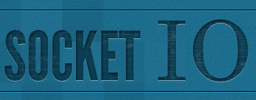

Marco Nattero
Trabajo Fin Grado
"Diseño e Implementación de un entorno de colaboración en tiempo real utilizando webRTC"
Escuela Técnica Superior de Ingenieros de Telecomunicación (UPM)
Madrid, Julio de 2014
Madrid, Julio de 2014
WebRTC
Es la revolución de las comunicaciones por Internet. WebRTC permite establecer una conexión P2P entre varios sistemas y compartir flujos de vídeo, audio y datos en tiempo real.
Licode
Es una plataforma de comunicaciones basada en WebRTC y de código abierto. Hace de WebRTC una herramienta con la que trabajar de manera sencilla y eficaz.

Socket.IO
Es una librería que permite controlar eventos en tiempo real a través de conexiones TCP, salvando cualquier problema de compatibilidad entre los distintos equipos involucrados.

TFG: "Diseño e implementación de un entorno de colaboración basado en WebRTC"
por Marco Nattero Santiago se distribuye bajo una Licencia Creative Commons Atribución-NoComercial-SinDerivar 4.0 Internacional